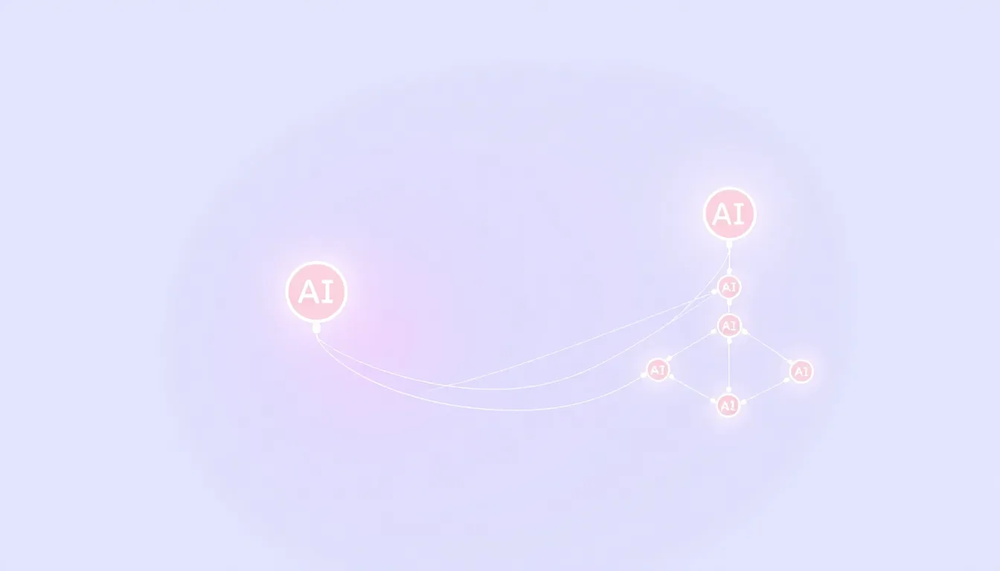

KI-Agenten Kosten senken: Das Advisor- und Orchestrator-Pattern ohne versteckte KI-Kosten
"Werden KI-Agenten jetzt zu teuer?" ist die falsche Frage. Die richtige lautet: Versteht Ihr Anbieter, wie man Modellkosten strukturiert? Zwei verifizierte Kostenarchitekturen – Advisor und Orchestrator – zeigen, warum das den Unterschied zwischen kontrollierten und unkontrolliert wachsenden KI-Agenten-Kosten macht.
- Warum "KI-Agenten sind teuer" die Anbieterwahl verzerrt
- Zwei Begriffe, zwei Bedeutungen: Orchestrator hier vs. im Parallel-Agenten-Artikel
- Das Advisor-Pattern: günstiges Modell arbeitet, teures Modell berät nur
- Das Orchestrator-Pattern (Kostenarchitektur): teuer plant, günstig führt aus
- Verifizierte Zahlen vs. kursierende Behauptungen
- Worauf bei der Anbieterwahl achten
- Interaktiver ROI-Rechner
- Grenzen des Ansatzes
- FAQ
01 — Warum "KI-Agenten sind teuer" die Anbieterwahl verzerrt
Seit Anthropics Flaggschiffmodell Fable 5 von subventioniertem Abo-Zugang auf nutzungsbasierte Abrechnung umgestellt hat, hören wir von Mittelstandskund:innen häufiger dieselbe Sorge: "Werden KI-Agenten jetzt zu teuer für uns?"
Die ehrliche Antwort: Nicht, wenn der Anbieter versteht, wie man Modellkosten strukturiert. Genau das unterscheidet einen gut geführten Agenten-Einsatz von einem mit unkontrolliert wachsender Rechnung – und ist eine der wichtigsten, aber am seltensten gestellten Fragen bei der Anbieterwahl.
Wer heute KI-Agenten-Anbieter vergleicht, fragt fast immer nach Use Cases, Integrationen und Datenschutz. Zu selten wird gefragt: Wie geht der Anbieter mit Modellkosten um? Läuft alles über ein einziges, durchgängig teures Modell – oder gibt es eine durchdachte Architektur, die günstigere Modelle dort einsetzt, wo sie ausreichen, und teurere nur dort, wo sie wirklich gebraucht werden? Diese Frage entscheidet oft mehr über die langfristigen Kosten eines Agenten-Einsatzes als der Stundensatz des Anbieters.
02 — Zwei Begriffe, zwei Bedeutungen: Orchestrator hier vs. im Parallel-Agenten-Artikel
Ein kurzer, aber wichtiger Einschub, bevor wir weitermachen: Der Begriff "Orchestrator" taucht in der KI-Welt in mehreren Bedeutungen auf – auch auf unserer eigenen Website.
In unserem Artikel über parallele KI-Agenten meint "Orchestrator" einen Menschen, der mehrere Agenten-Instanzen für parallele Aufgaben koordiniert – ein Produktivitäts-Setup, bei dem Sie selbst die Schaltzentrale sind, während mehrere Agenten gleichzeitig an unabhängigen Aufgaben arbeiten.
Hier geht es um etwas anderes: Das "Orchestrator-Pattern" in diesem Artikel ist eine reine Kostenarchitektur – ein teures KI-Modell, das ausschließlich plant und Schlüsselentscheidungen trifft, während günstigere Modelle die eigentliche Ausführung übernehmen. Kein Mensch koordiniert hier etwas, kein Produktivitäts-Setup ist gemeint. Es geht ausschließlich darum, wie ein System aus mehreren KI-Modellen mit unterschiedlichen Preispunkten intern Aufgaben verteilt, um Kosten zu senken.
Beide Konzepte haben außer dem Namen nichts gemeinsam. Wenn Sie mit einem Anbieter über "Orchestrator" sprechen, fragen Sie immer nach: Ist damit eine Kostenarchitektur zwischen Modellen gemeint – oder ein Mensch, der parallele Agenten-Instanzen koordiniert? Wer die beiden Bedeutungen vermischt, trifft am Ende die falsche Kaufentscheidung.
03 — Das Advisor-Pattern: günstiges Modell arbeitet, teures Modell berät nur
Anthropic hat im April 2026 in seinem Blogbeitrag "The advisor strategy" ein Muster beschrieben, das sich in der Praxis unmittelbar auf KI-Agenten-Kosten übertragen lässt: Für jede zehnte Anfrage wird ein teures Modell zurate gezogen statt bei jeder einzelnen – das ist der Kern des Advisor-Patterns.
Das günstigere Modell erledigt die eigentliche Arbeit durchgehend selbst. Nur in einem kleinen Anteil der Fälle wird das teurere "Advisor"-Modell hinzugezogen, um eine zweite Einschätzung abzugeben oder eine schwierige Passage zu prüfen. Das Ergebnis laut Anthropic: ein Genauigkeitsgewinn von +2,7 Prozentpunkten auf dem SWE-bench-Multilingual-Benchmark bei gleichzeitig −11,9 % geringeren Kosten gegenüber dem alleinigen Einsatz des teuren Modells.
Für die Anbieterwahl ist das ein aufschlussreiches Muster: Ein Anbieter, der ein Advisor-Pattern (oder ein vergleichbares Konzept) implementiert hat, zeigt damit, dass er über Modellkosten aktiv nachdenkt – statt pauschal das teuerste verfügbare Modell für alles einzusetzen und die Mehrkosten an Sie weiterzureichen.
04 — Das Orchestrator-Pattern (Kostenarchitektur): teuer plant, günstig führt aus
Das Orchestrator-Pattern, wie es in Anthropics Claude Cookbooks dokumentiert ist, geht einen Schritt weiter: Ein teureres Modell übernimmt ausschließlich die Planung und trifft die Schlüsselentscheidungen im Ablauf. Die eigentliche Ausführung – der Großteil der Arbeit – läuft über günstigere Modelle.
Auf dem BrowseComp-Benchmark erreichte die kostenoptimierte Orchestrator-Konfiguration in den Cookbook-Beispielen 86,8 % Genauigkeit bei 18,53 US-Dollar Kosten – gegenüber 90,8 % Genauigkeit bei 40,56 US-Dollar beim durchgängigen Einsatz des teuren Modells. In einer anderen dokumentierten Konfiguration lag das Verhältnis bei rund 96 % Genauigkeit zu rund 46 % der Kosten des teuren Baseline-Modells.
Ein konkretes Rechenbeispiel aus den Cookbooks: Ein Durchlauf kostete mit Orchestrator-Architektur 1,61 US-Dollar und dauerte 194 Sekunden – derselbe Task mit einem einzelnen teuren Modell kostete 4,00 US-Dollar und dauerte 608 Sekunden. Über 80 % der verarbeiteten Tokens liefen dabei zum günstigeren Tarif, und jeder Sub-Agent arbeitet mit einem isolierten Prompt-Cache – ein technisches Detail, das direkten Einfluss auf die tatsächlich realisierten Einsparungen hat.
05 — Verifizierte Zahlen vs. kursierende Behauptungen
Gerade weil KI-Kostenzahlen im Umlauf oft optimistischer klingen, als sie belegt sind, lohnt sich eine klare Einordnung, welche Zahlen in diesem Artikel welchen Status haben:
| Zahl | Status | Quelle |
|---|---|---|
| Advisor-Pattern: +2,7pp Genauigkeit / −11,9 % Kosten | Offiziell bestätigt | Anthropic-Blog, "The advisor strategy", April 2026 |
| Orchestrator-Pattern: BrowseComp 86,8 %/18,53 $ vs. 90,8 %/40,56 $, ~96 %/~46 %, 1,61 $ vs. 4,00 $ | Cookbook-verifiziert | Anthropic Claude Cookbooks (Beispiel-Notebooks) |
| "92 % Genauigkeit bei 63 % der Kosten" auf SWE-bench Pro | Nicht unabhängig bestätigt | Kursierende Zahl ohne verifizierbare Primärquelle |
Diese Transparenz ist selbst ein Kriterium, das Mittelstandskund:innen von jedem KI-Agenten-Anbieter einfordern sollten. Ein Anbieter, der Ihnen nur die günstigste kursierende Zahl nennt, ohne sie einordnen zu können, ist kein Anbieter, dem Sie Ihr KI-Budget anvertrauen sollten. Fragen Sie konkret nach Primärquellen, nicht nach Marketing-Prozentsätzen.
06 — Worauf bei der Anbieterwahl achten: Fragen für den Vendor-Vergleich
Aus den beiden Patterns lassen sich konkrete Fragen ableiten, die Sie in jedem Anbietergespräch stellen sollten:
- Trennt der Anbieter Modellkosten nach Aufgabentyp, oder läuft alles über ein einziges Modell – unabhängig davon, ob die Aufgabe es rechtfertigt?
- Gibt es Kosten-Monitoring pro Agentenrolle bzw. Use-Case, oder erhalten Sie nur eine pauschale monatliche Rechnung ohne Aufschlüsselung?
- Kann der Anbieter erklären, wann ein teureres Modell tatsächlich nötig ist und wann nicht – oder wird pauschal das teuerste Modell für alles eingesetzt?
- Wie transparent ist der Anbieter bei Benchmark-Zahlen? Nennt er nachvollziehbare Quellen, oder nur runde Marketing-Prozentsätze ohne Beleg?
- Wird die Kostenarchitektur bei wachsendem Nutzungsvolumen mitgedacht, oder skaliert die Rechnung linear mit jeder zusätzlichen Anfrage?
Stellen Sie diese Fragen nicht, um Fachbegriffe abzuprüfen, sondern um zu sehen, ob der Anbieter überhaupt eine durchdachte Antwort hat. Ein Anbieter, der Kostenarchitektur nicht als eigenes Thema behandelt, wird sie in Ihrem Projekt vermutlich auch nicht mitdenken.
07 — Interaktiver ROI-Rechner
Wenden Sie die beiden verifizierten Kostenverhältnisse auf Ihr eigenes geschätztes KI-Agenten-Budget an und sehen Sie die potenzielle Ersparnis:
💶 Kostenarchitektur-Rechner
Hinweis: Diese Berechnung wendet die veröffentlichten Kostenverhältnisse (Advisor: −11,9 %, Anthropic-Blog April 2026; Orchestrator: −54 %, Claude Cookbooks bei gut parallelisierbaren Aufgaben) illustrativ auf Ihr geschätztes Budget an. Sie ist keine projektspezifische Prognose – der tatsächliche Effekt hängt von Ihrem Aufgabenmix, der gewählten Architektur und der konkreten Anbieterumsetzung ab.
08 — Grenzen des Ansatzes
Ehrlichkeit gehört für uns zur Kostenarchitektur dazu – deshalb hier die vier wichtigsten Einschränkungen, die bei jedem Advisor- oder Orchestrator-Setup gelten:
- Aufteilung erfordert Architekturarbeit: Ein System sinnvoll in "teuer plant, günstig führt aus" aufzuteilen, ist keine Konfigurationseinstellung, sondern eine Design-Entscheidung, die technisches Verständnis der jeweiligen Aufgabe voraussetzt.
- Nicht jede Aufgabe lässt sich sauber splitten: Stark sequenzielle oder eng verzahnte Aufgaben lassen sich schlechter in Planungs- und Ausführungsschritte trennen als klar abgrenzbare, wiederholbare Prozesse.
- Caching ist nicht automatisch: Isolierte Prompt-Caches pro Sub-Agent müssen aktiv implementiert werden. In der Praxis gibt es dokumentierte Fälle (z. B. die Diskussion um claude-code#29966), in denen Caching-Verhalten anders ausfällt als erwartet – ein Punkt, den technisch versierte Anbieter aktiv im Blick behalten sollten.
- Die 92 %/63 %-Zahl bleibt mit Vorsicht zu genießen: Da sie nicht unabhängig verifiziert ist, sollte sie nicht als harte Kalkulationsgrundlage verwendet werden, sondern höchstens als grobe Orientierung, die weitere Prüfung verdient.
09 — FAQ: Häufige Fragen zu KI-Agenten-Kosten
Ist "KI-Agenten sind zu teuer geworden" überhaupt richtig?
Was ist der Unterschied zwischen dem "Orchestrator" in diesem Artikel und dem in eurem Artikel über parallele KI-Agenten?
Wie stark lassen sich KI-Agenten-Kosten realistisch senken?
Baut Hermes Agency das in eigene Agenten-Einsätze ein?
Kostenarchitektur als fester Bestandteil, kein Aufpreis
Hermes Agency implementiert Modellwahl nach Aufgabentyp und Kostenmonitoring pro Agentenrolle als Standardbestandteil jedes Hermes-Agent-Setups. DSGVO-konform, mit transparenter Quellenlage bei allen Kostenkennzahlen, und typischerweise live in 1 Woche.
Kostenloses Erstgespräch buchen →